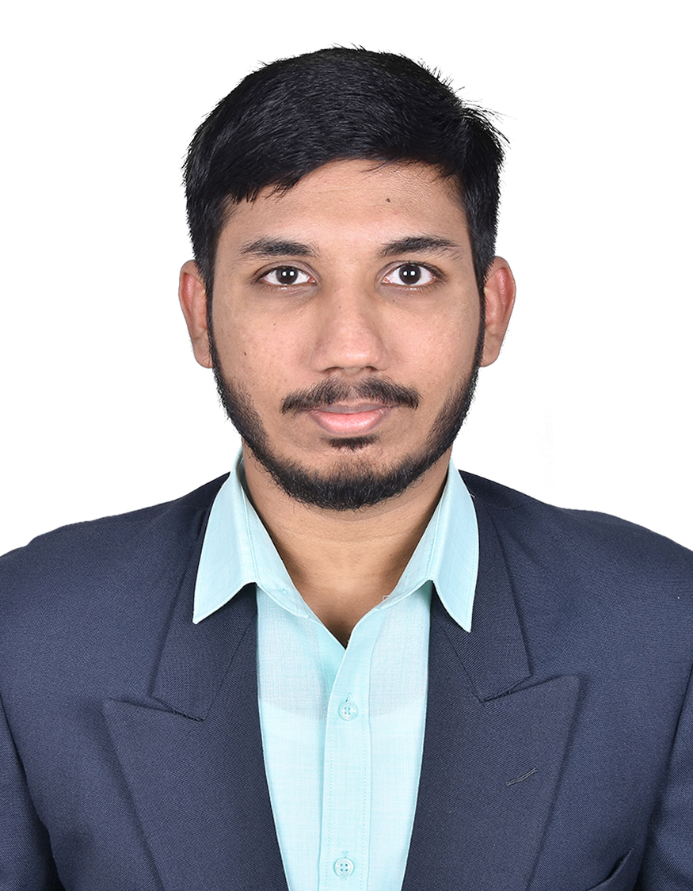

M.Tech Graduate — VLSI Design
I am an M.Tech graduate in VLSI Design from
Vellore Institute of Technology (VIT), Chennai,
with a strong foundation in
Analog/Mixed-Signal IC Design, Full-Custom Analog Layout,
Memory Layout, RTL Design, and ASIC Physical Design.
My experience includes
Analog/RF circuit design,
full-custom analog layout,
physical verification (DRC/LVS),
RC parasitic extraction (PEX),
RTL development,
logic synthesis,
floorplanning,
placement,
Clock Tree Synthesis (CTS),
routing,
and Static Timing Analysis (STA)
using industry-standard EDA tools.
I have worked on multiple CMOS technologies including
GlobalFoundries 40nm,
TSMC 65nm (Academic),
SAED 32nm,
SCL 180nm,
GPDK 180nm,
GPDK 90nm,
and GPDK 45nm.
Currently seeking opportunities as an
Analog Layout Engineer,
AMS Layout Engineer,
Memory Layout Engineer,
with
ASIC Physical Design
as a secondary area of interest.

Contact
📧 kmrakesh23@gmail.com
📱 +91 90252 53871
📍 Chennai, Tamil Nadu, India
🚀 Immediate Joiner
Education
Master of Technology (M.Tech)
VLSI Design
2024 – 2026
Bachelor of Engineering (B.E.)
Electronics and Communication Engineering
2019 – 2023
Professional Training
Analog Layout Design Training
Training Provider: Semionics
Technology: GlobalFoundries (GF40) CMOS
Completed hands-on training in Full-Custom Analog Layout with emphasis on layout optimization, matching techniques, physical verification, and parasitic-aware design methodologies for analog and mixed-signal integrated circuits.
- Full-Custom Analog Layout
- Differential Pair Layout
- Current Mirror Layout
- Device Matching
- Common-Centroid Layout
- Interdigitation
- Dummy Devices
- Guard Rings & Shielding
- Symmetry & Layout Optimization
- Manual Routing
- DRC & LVS Verification
- RC Parasitic Extraction (PEX)
- Parasitic-Aware Layout Design
- Analog Layout Best Practices
Technical Skills
- Full-Custom Analog Layout
- Device Matching
- Common-Centroid
- Interdigitation
- Dummy Devices
- Symmetry
- Guard Rings
- Shielding
- Fingering
- Via Arrays
- Manual Routing
- Layout Optimization
- Calibre DRC/LVS
- Assura DRC/LVS
- RC Parasitic Extraction (PEX)
- Post-Layout Verification
Analog Building Blocks
- Differential Pair
- Current Mirror
- Comparator
- Bandgap Reference Fundamentals
- LDO Fundamentals
- ADC/DAC Fundamentals
- Analog Circuit Design
- RF Circuit Simulation
- S-Parameters (S11, S12, S21, S22)
- Noise Figure (NF)
- Linearity (IIP3, OIP3, IMD3, P1dB)
- Stability (K-Factor, μ-Factor)
ASIC Physical Design (Secondary)
- RTL Design
- Functional Verification
- Logic Synthesis
- Floorplanning
- Placement
- Clock Tree Synthesis (CTS)
- Routing
- Static Timing Analysis (STA)
- Cadence Virtuoso
- Virtuoso Layout Suite
- Calibre
- Assura
- Synopsys VCS
- Design Compiler
- ICC2
- Cadence Innovus
- ModelSim
Process Technologies
- GlobalFoundries 40nm
- TSMC 65nm (Academic)
- SAED 32nm
- SCL 180nm
- GPDK 180nm
- GPDK 90nm
- GPDK 45nm
Programming
- Verilog
- SystemVerilog
- TCL
- C
- Python
- Perl
Featured Projects
Technology: SCL 180nm CMOS
- Designed and analyzed CG-CS, Cascode, and Folded-Cascode LNA architectures using Cadence Virtuoso.
- Performed RF analysis including Gain, S-Parameters, Noise Figure, Linearity (IIP3, OIP3, IMD3, P1dB), and Stability.
- Implemented full-custom analog layout using Common-Centroid, Device Matching, Guard Rings, Shielding, and Symmetry.
- Performed DRC/LVS verification and RC Parasitic Extraction (PEX).
- Designed a custom square spiral inductor for RF layout implementation.
Technology: SAED 32nm
- Designed a custom 3-stage RISC-V processor using Verilog/SystemVerilog.
- Performed RTL verification using Synopsys VCS.
- Executed synthesis using Synopsys Design Compiler.
- Performed Floorplanning, Placement, CTS, Routing, and Static Timing Analysis using Synopsys ICC2.
- Optimized timing and power across the RTL-to-GDSII implementation flow.
Technology: GPDK 90nm CMOS
- Designed 4-bit and 8-bit Hybrid Full Adder based Array Multipliers.
- Implemented schematic and full-custom layout using Cadence Virtuoso.
- Performed DRC, LVS, and RC Parasitic Extraction (PEX).
- Validated functionality using post-layout simulation.
Technology: Cadence Virtuoso
- Designed high-speed 4-bit and 8-bit Kogge-Stone Adders using Memristor-CMOS logic.
- Compared delay, power consumption, and area with conventional CMOS implementations.
- Performed schematic simulation and performance analysis.
Publications
Published in Springer – International Conference on Intelligent Computing and Vehicular Technology (ICICV 2023)
View Publication (DOI)
Certifications
Let's Connect
Contact Information
📧 Email
kmrakesh23@gmail.com
💼 LinkedIn
linkedin.com/in/kmrakesh
💻 GitHub
github.com/Rakesh-2306
Career Objective
I am actively seeking opportunities as an Analog Layout Engineer, Analog/Mixed-Signal (AMS) Layout Engineer, Custom IC Layout Engineer, or Memory Layout Engineer with ASIC Physical Design as a secondary area of interest.
I am passionate about developing reliable, high-performance, and energy-efficient semiconductor solutions while continuously expanding my expertise in analog layout, physical verification, and VLSI implementation.
🚀 Immediate Joiner